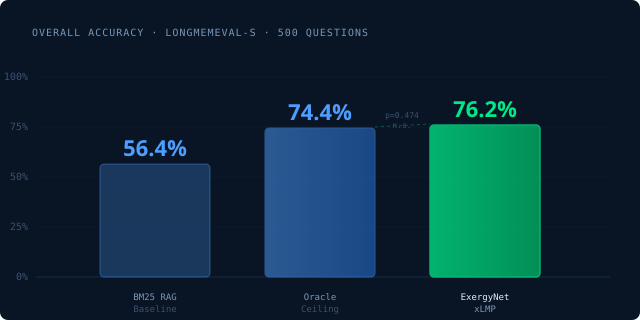
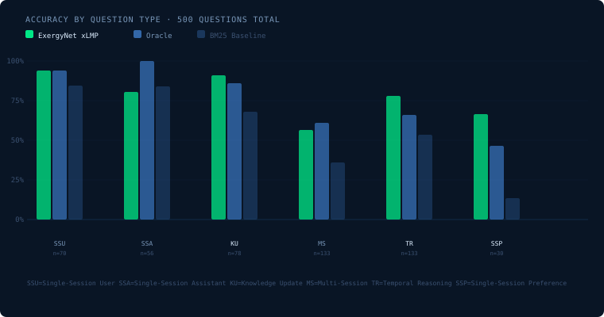
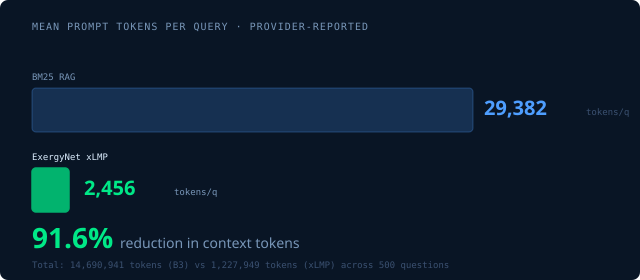

ExergyNet Achieves 76.2% Accuracy on LongMemEval-S with 91.6% Lower Context Consumption
Across 500 standardized conversational memory questions, ExergyNet's xLMP Semantic Router delivered 381 correct answers while consuming 91.6% fewer provider-reported prompt tokens than the session-level BM25 baseline.
Results
Three evaluation conditions were tested on 500 LongMemEval-S questions. Token counts for B3 and xLMP are provider-reported from the Gemini API. The Oracle token count is a local-tokenizer estimate.
| System | Accuracy | Correct (500q) | Mean Tokens/Query | Total Tokens (500q) | Δ Accuracy vs BM25 |
|---|---|---|---|---|---|
| BM25 RAG (B3, baseline) | 56.4% | 282 | 29,382 | 14,690,941 | — |
| Oracle (B1) † | 74.4% | 372 | ~5,600 est. | — | +18.0 pp |
| ExergyNet xLMP (VERIFY-006) | 76.2% | 381 | 2,456 | 1,227,949 | +19.8 pp |
† Oracle: longmemeval_oracle.json split — evidence-bearing sessions only (mean ~1.9 sessions/question, ~5,600 tokens estimated via local tokenizer). This is the benchmark's theoretical ideal-retrieval baseline, not the full conversation history.

Accuracy by Question Type
LongMemEval-S includes six question types testing different memory and reasoning capabilities. ExergyNet xLMP beats BM25 on 5 of 6 categories and matches or exceeds Oracle accuracy across four of six categories (3 wins + 1 tie).
| Question Type | n | xLMP | Oracle | BM25 | Δ vs BM25 | vs Oracle |
|---|---|---|---|---|---|---|
| Single-Session User | 70 | 94.3% | 94.3% | 84.3% | +10.0 pp | 0.0 pp (tie) |
| Single-Session Assistant ‡ | 56 | 80.4% | 100.0% | 83.9% | −3.5 pp | −19.6 pp |
| Knowledge Update | 78 | 91.0% | 85.9% | 68.0% | +23.0 pp | +5.1 pp |
| Multi-Session | 133 | 56.4% | 60.9% | 36.1% | +20.3 pp | −4.5 pp |
| Temporal Reasoning | 133 | 78.2% | 66.2% | 53.4% | +24.8 pp | +12.0 pp |
| Single-Session Preference | 30 | 66.7% | 46.7% | 13.3% | +53.3 pp | +20.0 pp |
| Overall | 500 | 76.2% | 74.4% | 56.4% | +19.8 pp | +1.8 pp |
‡ Single-Session Assistant: ExergyNet achieved higher accuracy than BM25 across five of six categories. SSA accuracy was 80.4%, versus 83.9% for BM25 and 100.0% for the Oracle. Internal forensic analysis identified retrieval misses in two of the eleven incorrect responses and long-response truncation in the remaining nine. The evaluated VERIFY-006 configuration indexed both user and assistant conversational content. The Oracle provides complete sessions in which all assistant-turn content is available; the observed 100.0% SSA accuracy is consistent with this architecture, though the causal relationship has not been independently established.

Statistical Comparison with Oracle
The Oracle provides only the evidence-bearing sessions for each question (~1.9 sessions/question on average) — the benchmark's theoretical ideal-retrieval ceiling. xLMP's 1.8 pp observed advantage was tested for statistical significance.
Exact two-tailed p = 0.474. The result is not statistically significant at any conventional threshold (α = 0.05, 0.10, 0.20). This result does not establish statistical superiority, non-inferiority, or equivalence between xLMP and the Oracle.
Contingency: both correct = 314; xLMP correct / Oracle wrong = 67; xLMP wrong / Oracle correct = 58; both wrong = 61.
Approximate 95% confidence interval for the accuracy difference (normal approximation; SE = √((b+c)/n²) = √(125/500²)): [−2.6 pp, +6.2 pp]
Context Efficiency
Token counts for B3 and xLMP are provider-reported from the Gemini API. The 91.6% reduction is computed from verified provider totals.
| Metric | BM25 (B3) | ExergyNet xLMP | Reduction |
|---|---|---|---|
| Mean tokens/query | 29,382 | 2,456 | 91.6% |
| Total prompt tokens (500q) | 14,690,941 | 1,227,949 | 91.6% |
| Correct answers delivered | 282 | 381 | +99 answers |
ExergyNet delivered 35.1% more correct answers than session-level BM25 (381 vs 282) while consuming 91.6% fewer context tokens across 500 LongMemEval-S questions.


Why Context Efficiency Matters
Reducing unnecessary context processing has practical implications across a range of applications involving persistent information.
Persistent Enterprise Intelligence
Applications that maintain conversation history, customer context, or operational state across extended interactions may benefit from architectures that bound context delivery without sacrificing recall.
Longitudinal Information Management
Systems managing growing knowledge bases face the challenge of delivering relevant historical content without proportional growth in per-query computational requirements.
Agentic Systems
Autonomous agents that accumulate state across extended task sequences may require architectures capable of selecting relevant historical context within bounded computational budgets.
Model-Independent Memory
Memory infrastructure that operates across model families without fine-tuning or context window modification offers architectural flexibility for evolving AI deployments.
These are described as potential application benefits. EDT-BENCH-001 results are specific to the LongMemEval-S evaluation under the stated conditions. Performance on other workloads, production environments, or different model families has not been independently demonstrated.
Benchmark Methodology
Known Limitations
xLMP retrieves at turn level while B3 retrieves at session level. Wu et al. (2024) document that turn-level retrieval substantially outperforms session-level retrieval on LongMemEval. An independent turn-level BM25 control (B4) would isolate what fraction of the +19.8 pp accuracy improvement is specifically attributable to xLMP's semantic routing versus the inherent advantage of finer retrieval granularity. That experiment has not been conducted. Without B4, the full +19.8 pp cannot be attributed solely to xLMP.
Results reflect a single benchmark run. Temperature=0 reduces but does not eliminate provider-side nondeterminism. Repeat-run variance has not been characterized.
Both generation and evaluation used gemini-3.8-flash. Results have not been independently verified with a third-party evaluation model.
Oracle token counts are estimated via a local tokenizer, not provider-reported. Direct comparison of xLMP token efficiency against Oracle is therefore approximate.
Evidence Integrity
All numerical results derive from sealed evaluation records. The generation and evaluation logs, retrieval corpus, and reference dataset are identified by SHA-256 hash.
Raw per-question logs are restricted. The public reproducibility manifest identifies which evidence is publicly accessible and which remains restricted pending dataset licensing review.
Citation and References
EDT INC. (2026). ExergyNet Achieves 76.2% Accuracy on LongMemEval-S with 91.6% Lower Context Consumption (EDT-BENCH-001). ExergyNet Research. https://doi.org/10.5281/zenodo.24544305
Wu, D., Wang, H., Yu, W., Zhang, Y., Chang, K.-W., & Yu, D. (2024).
LongMemEval: Benchmarking Chat Assistants on Long-Term Interactive Memory.
arXiv:2410.10813. ICLR 2025.
EDT-BENCH-001 · Sealed 2026-11-25 · EDT INC / ai@exergynet.org · ExergyNet — Indianapolis